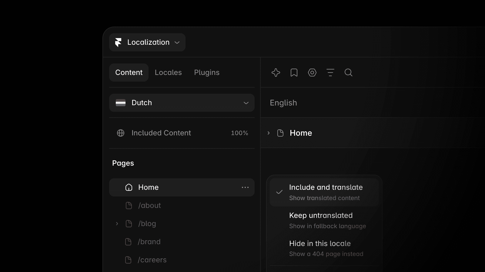
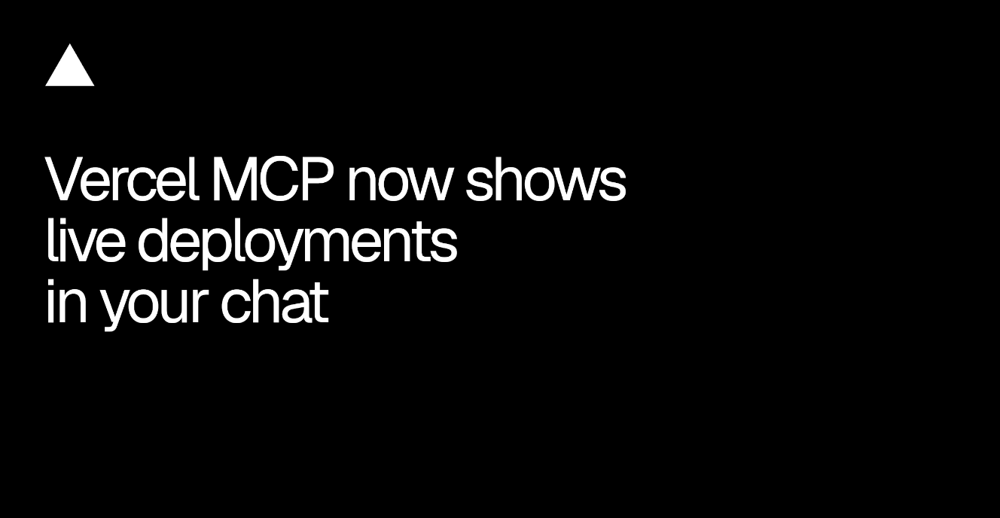
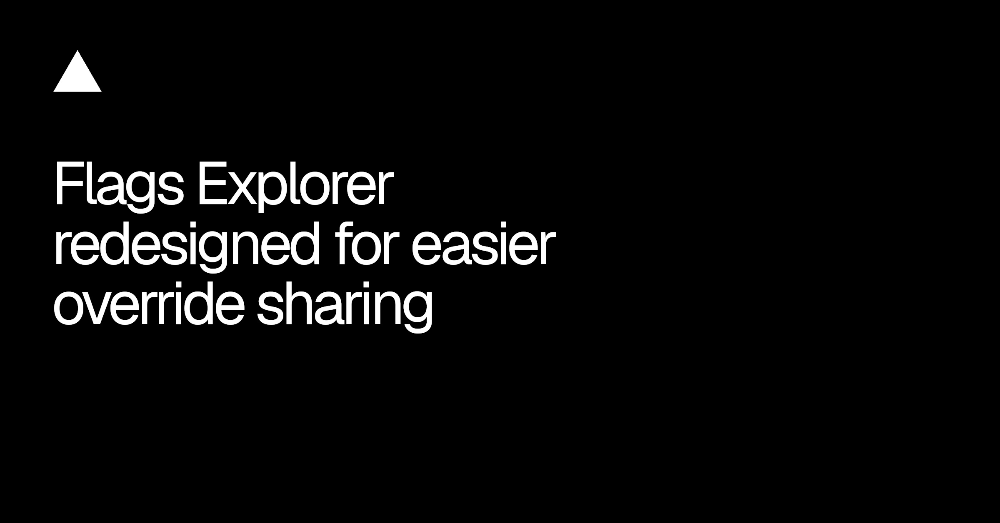
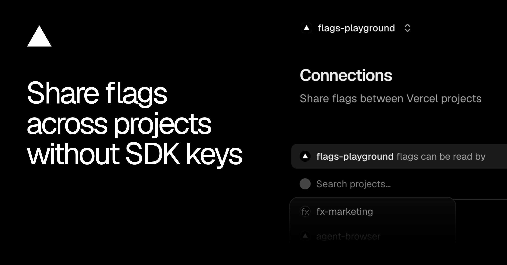
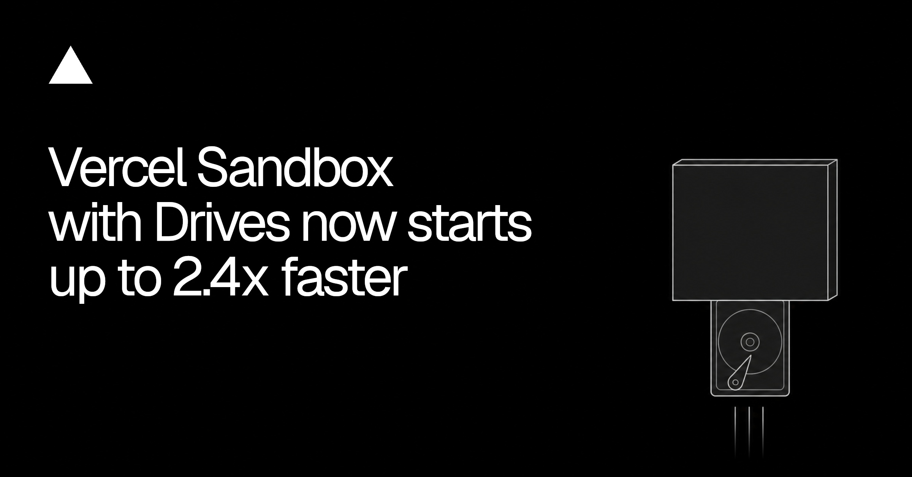
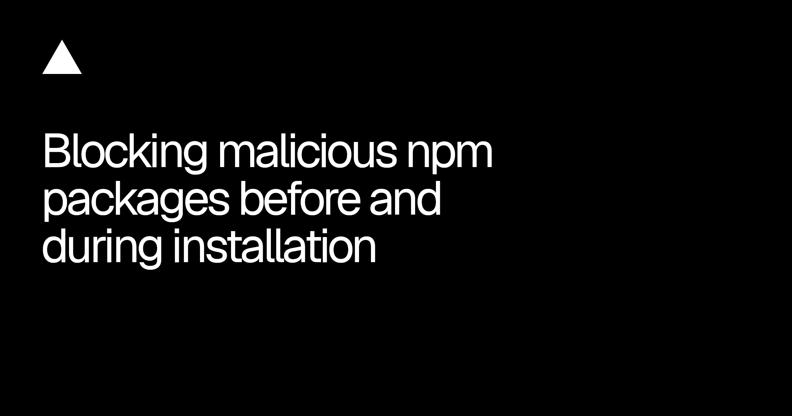

今天这批更新都在收拾“工作流中间那一段”。Figma 让 shader 不只停在画布里，Framer 让 agent 一边写程序一边改文档，Vercel 则把部署、feature flag 和 sandbox 的状态往人能看懂、也能分享的界面里搬。
生成能力没突然跳一级，来回切工具、复制密钥、等 agent 一步步回话的时间倒是被削掉了。这个变化更实在：设计工程的下一轮效率，不靠再加一个聊天框，而靠状态能不能被看见、权限能不能被收住、失败后能不能接着干。
Figma 的 shader 现在能按最高 4096px 渲染和导出，也能跟着 “build this with code” 进入 code layer。后半句更重要：视觉实验终于不必在交付时退化成一张截图。当前在浏览器端依赖 Chrome 157，分批开放；shader 本身已经对所有用户 GA。
先别急着把所有 hero 都做成 shader。挑一个依赖细腻噪声、光晕或形变的画面，做同尺寸 PNG 与 code layer 双版本，比较首屏体积、GPU 占用、低性能设备和 reduced motion。4096px 解决的是保真，不是性能预算。
Framer 把 Agent 的执行层重写成流式 JavaScript：模型还在往后写，前面的 code cell 已经开始跑。过去改一百个 frame 可能要发一百条编辑命令；现在循环、判断、读取和写入可以放在同一段程序里。官方数据是平均少一半 tool steps、少 39% cached input tokens，整次任务最多便宜 33%、快 20%。
这次不只是跑分。Agent 已能改 component 的 object / array 字段和动画设置，能管 CMS 排序、表单 webhook、SVG、branch；content editor 可以改 CMS 并撤销，viewer 只能问不能改。终于把“能做多少”和“谁能做”写在同一页上。还没实测，先不替它报喜；拿一次全站品牌色替换做压力测试，重点记失败发生在哪个 cell、已落地的修改怎么回滚。

Localization 多了 Content 面板，页面、collection 和 component 可以按语言决定：翻译、保留原文，或者整项隐藏；还能批量处理。新建 locale 时也能选择全部纳入，或先维持未翻译状态。
这看起来像后台整理，实际解决了多语言站最尴尬的发布方式：不是“全站翻完才上线”，也不是半成品到处漏。产品团队可以先开首页和结账路径，博客慢慢补。需要补测的只有一件事——隐藏内容碰到导航、内链和 CMS reference 时，Framer 是替你收口，还是留下死路。

Vercel MCP 的 deployment 不再只回一段文本。在支持 MCP Apps 的客户端里，它会显示实时状态、build logs、commit、source 和 Visit 按钮；日志可以直接送回对话继续排错，多项目仓库也能切项目。客户端不支持卡片时，仍会退回文本状态、preview URL 与 commit。
这是聊天式工具该有的形态：可视状态留在卡片里，解释和决策留在对话里。我们做内部 agent 面板时可以照这个分工，别让模型用三段自然语言复述一个 building → failed → ready 状态机。

Flags Explorer 把 override、branch recommendation 和相关动作收在同一块界面；分支已经设过 override 时，同事打开 deployment 会收到推荐弹窗。也就是说，一组实验条件终于能随预览环境一起交接，不用再在群里写“记得把 A、B、C 打开”。所有套餐可用。
好用归好用，分享 URL 也意味着状态可能被带出当前讨论。团队最好给 override 链接加失效时间或明确命名，设计评审结束就清掉。临时条件如果活得比需求还久，下一次截图会把人带进另一个世界。

Project Connections 允许同一 team 的项目读取另一个项目里的 flags，不再复制 server SDK key。线上靠 deployment identity 鉴权，本地用 vercel env pull 拿 OIDC token；连接是全环境只读，消费方自己的 deployment 决定读取 production 还是 preview flags。
这条很适合设计系统预览站、主产品和实验 playground 共用同一套开关。密钥少一份，漂移就少一份。代价是连接图必须有人管：谁在读谁、哪个环境读到什么，最好进架构图和 offboarding 清单，别等源项目改名才追着报错找关系。

挂载 Drive 的 Vercel Sandbox，median 启动时间从 1.7 秒降到 0.7 秒，官方口径是最高 2.4 倍，不需要升级 SDK 或改配置。单次只省一秒；放到 agent 每轮都要起 sandbox、读素材、改文件、跑预览的循环里，体感会很明显。
这里别只看 median。真实设计工程任务通常带大图、字体和依赖缓存，p95、首次挂载和多次复用才决定是不是“快”。先把现有视觉回归任务的 sandbox startup 单独打点，免得总耗时下降后还不知道钱省在哪。

Vercel 会在安装前检查 lockfile，也会在下载过程中拦截命中 blocklist 的 npm 版本；从 build cache 恢复依赖也要过这一关。规则通常几分钟内进入新 build，所有套餐自动开启。命中后 deployment 失败，日志给出包名和版本，并尝试让受影响的 build cache 失效。
这会多出一种“代码没改多少，部署却突然失败”的情况。别让设计工程同学第一反应是重跑；先看 package、version 和 lockfile，再升级。安全闸门如果没有清楚的错误文案，就会被大家当成不稳定按钮。
视频：Vimeo 原片https://vimeo.com/1242433619｜来源：Stash 文章https://www.stashmedia.tv/merijn-hoss-flora-takes-flight-for-down-the-rabbit-hole/
Merijn Hos 继续负责荷兰音乐节 Down The Rabbit Hole 的年度视觉。这次的核心很简单：植物开花后不枯萎，花瓣反而离开枝头，变成会飞的生物。静态 campaign 和 motion 共用这一个概念，所以片子没有另起一套“会动的 KV”，而是让 KV 自己长出下一幕。
画面舒服在半真半假的尺度。花茎和叶片保留植物结构，飞起来的部分却像昆虫、种子和软体生物的混种；粉、绿、紫被空气和浅景深揉开，白色衬线字压在中间，既像艺术节海报，也没妨碍动势。镜头不靠猛切，主要用漂浮、绽放、聚散和穿越景深把节奏拉起来。
做品牌 motion 时可以偷这套方法：先写一句“物件违反了哪条自然规律”，再画静态 key visual；动效只负责兑现这句设定。比先堆转场再找主题可靠得多。Vimeo player 预检返回 401，飞书用 1920px Stash 制作图降级，原片链接照留。
11 月 2 日新增两条，前一批已经写过的只留一个边界，不再换形容词重发。
1242433619。核验说明：Figma、Framer、Vercel、Stash 与 Vimeo 官方页面于 2026-11-03 回读。正文 7 张配图原始宽度为 1328–2400px，并逐张目视检查；Framer Harness 的抽象 OG 视觉没有帮助理解功能，因此未嵌入。Vimeo player 1242433619 的 GET 预检返回 401，飞书按规则使用 1920px Stash 制作视觉降级，同时保留 Stash 与 Vimeo 原片链接。